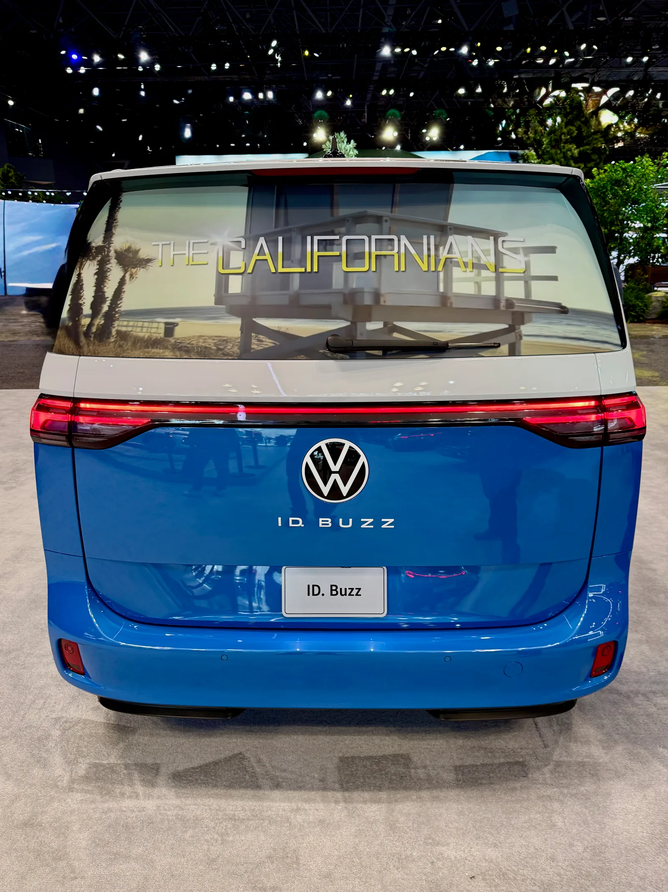
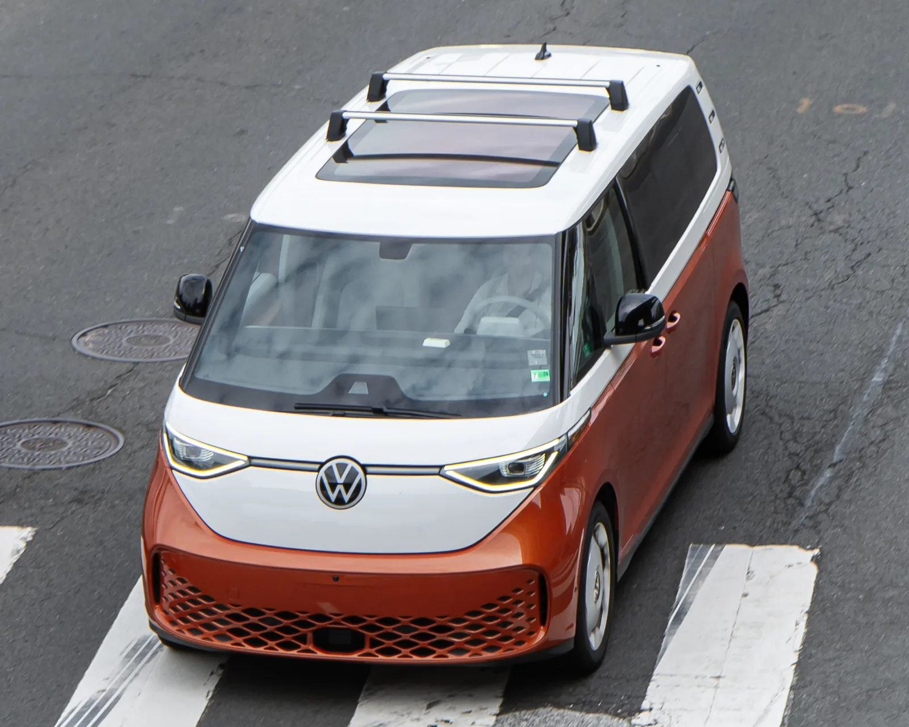
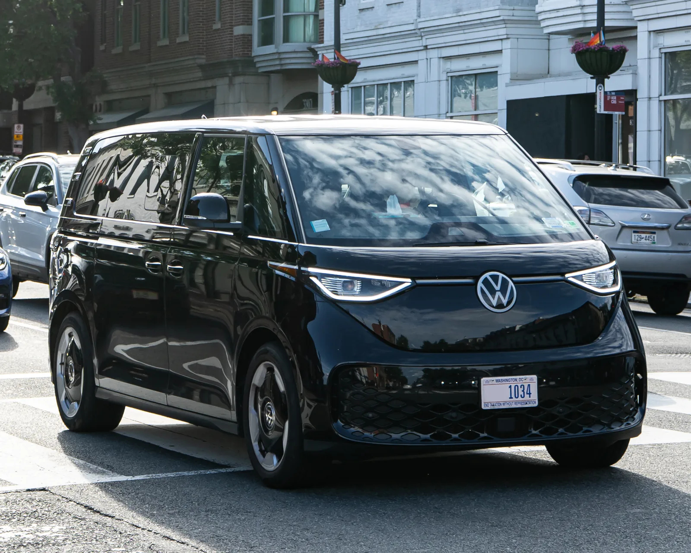

▲ 폭스바겐이 전기 밴 ID.버즈의 미국 복귀 시점을 2028년형으로 다시 연기했다 ⓒ Wikimedia Commons (Oleg Yunakov)
돌아온다던 전기 밴이 또 발이 묶였다. 이번이 벌써 세 번째다.
폭스바겐이 복고풍 전기 밴 ID.버즈의 미국 시장 복귀 시점을 2028년형으로 다시 연기했다. Carscoops·Car and Driver·InsideEVs 등 현지 매체 보도를 종합하면, 폭스바겐은 현지시각 9월 24일 딜러망에 이 같은 일정 변경을 통보했고, 이튿날 폭스바겐 대변인이 관련 보도를 공식 확인했다. 당초 올여름 판매 재개가 예고됐던 만큼, 2026년형에 이어 2027년형까지 건너뛰는 두 번째 '결번'이 되는 셈이다.
1. 세 번 미뤄진 복귀 — 타임라인으로 본 ID.버즈
ID.버즈는 20년에 가까운 개발 기간을 거쳐 2024년 11월 미국 시장에 처음 상륙했다. 그러나 초기 흥행은 기대에 못 미쳤다. 최초 판매가가 6만 달러에 육박했던 데다, 출시 당시 EPA 인증 주행거리는 234마일(약 377km)에 그쳤다. 폭스바겐은 2025년 한 해 동안 미국에서 ID.버즈를 6,140대 판매하는 데 그쳤다.
부진한 판매와 불안정한 전기차 시장 상황을 이유로, 폭스바겐은 2025년 12월 ID.버즈의 2026년형 생산을 아예 건너뛴다고 발표했다. 다만 당시에도 폭스바겐은 이 모델을 단종시키는 것은 아니라고 선을 그었다. 이어 2026년 5월에는 새 트림 2종, 업데이트된 소프트웨어, 휠·컬러 옵션 개선, 그리고 북미 표준 NACS 충전 포트 적용 등을 담은 2027년형 ID.버즈로 복귀하겠다고 예고했고, 판매 시작 시점을 8월로 제시했다.

▲ 2024년 11월 미국에 처음 상륙한 ID.버즈. 초기 6만 달러대 가격과 234마일 주행거리로 흥행에 어려움을 겪었다 ⓒ Wikimedia Commons (OWS Photography)
하지만 8월이 되도록 폭스바겐은 가격조차 공개하지 않았고, 결국 예고했던 판매 재개는 이뤄지지 않았다. 그리고 9월 24일, 폭스바겐은 이 2027년형 계획마저 접고 2028년형으로 한 번 더 늦춘다고 딜러망에 통보했다. Carscoops·InsideEVs 취재에 폭스바겐 대변인은 각각 보도 내용을 확인했으며, InsideEVs에는 "ID.버즈는 여전히 폭스바겐 오브 아메리카 라인업의 중요한 축이며, 우리는 미국 시장에서 이 모델의 미래에 전념하고 있다"는 입장을 전했다.
| 시점 | 내용 |
|---|---|
| 2024년 11월 | 미국 시장 최초 출시 (2025년형) |
| 2025년 12월 | 2026년형 생산 건너뛰기 발표 |
| 2026년 5월 | 2027년형으로 복귀 예고, 8월 판매 시작 제시 |
| 2026년 8월 | 가격 미공개 · 예고된 판매 재개 불발 |
| 2026년 9월 24일 | 2028년형으로 재연기 — 딜러망 통보 |
| 2027년 상반기(예정) | 2028년형 ID.버즈 판매 시작 목표 |
2. 공식 설명은 "기능 통합"… 그러나 배경엔 관세·세제 부담
폭스바겐이 내놓은 공식 연기 사유는 "기능을 한 번에 묶어 내놓기 위해서"라는 것이다. 회사 관계자는 "이런 방식이 더 폭넓은 고객 중심 개선 사항을 한 번의 출시로 소개할 수 있게 해준다"고 설명했다. 즉, 2027년형에서 예고했던 NACS 충전 포트·신규 트림 등에 더해, 양방향 충전과 디지털 키 기능까지 한꺼번에 담아 2028년형으로 내놓겠다는 논리다.
다만 InsideEVs는 이런 공식 설명과 별개로, ID.버즈가 미국 시장에서 처한 구조적 악조건을 함께 짚었다. ID.버즈는 7,500달러 규모의 연방 전기차 세액공제 대상에 한 번도 포함되지 못했고, 독일에서 생산돼 트럼프 행정부의 유럽산 자동차 관세에도 그대로 노출됐다. 여기에 6만 달러에 가까운 진입 가격까지 겹치며, 판매는 좀처럼 살아나지 못했다. 2026년 상반기 판매량은 2,481대로, 전년 동기(2,465대) 대비 16대 느는 데 그쳤다.
📍 재고는 오히려 많지 않다
2026년형 생산을 건너뛰었음에도 폭스바겐 딜러망에는 상당한 재고가 남아 있었던 것으로 전해진다. 다만 Car and Driver가 보도 시점 기준 Cars.com을 확인한 결과, 판매 중인 2025년형 신차 ID.버즈는 전국에 38대에 불과했다. 재고가 어느 정도 소진된 상태에서 신형 출시까지 다시 늦춰진 셈이다.
3. 2028년형엔 무엇이 달라지나

▲ 2028년형 ID.버즈에는 NACS 충전 포트, 캠핑 특화 '투어러' 트림, 양방향 충전 기능 등이 새로 추가될 예정이다 ⓒ Wikimedia Commons (OWS Photography)
연기와 별개로, 2028년형에 담길 변경점 자체는 세 매체 보도를 통해 이전보다 더 구체화됐다. 앞서 2027년형 계획 단계에서 예고됐던 북미 표준 NACS 충전 포트 기본 적용, 캠핑에 특화된 신규 '투어러(Tourer)' 트림, 업데이트된 소프트웨어와 투톤 컬러 등 휠·컬러 옵션 확대는 그대로 유지된다. 여기에 2028년형부터는 양방향 충전(V2L, Vehicle-to-Load) 기능과 디지털 키 기능, 그리고 터치식 대신 스티어링 휠 물리 버튼이 새로 추가된다. Carscoops는 이를 두고 폭스바겐이 그간 소비자 불만이 컸던 터치 인터페이스를 일부 되돌리는 조치라고 짚었다.

▲ 2028년형 ID.버즈는 북미 표준으로 자리잡은 NACS(테슬라 규격) 충전 포트를 기본 적용한다(예시 이미지) ⓒ Wikimedia Commons
✅ 2028년형 ID.버즈 주요 변경점
· 북미 표준 NACS 충전 포트 기본 적용
· 캠핑 특화 신규 '투어러(Tourer)' 트림
· 양방향 충전(V2L) 및 디지털 키 기능 신규 추가
· 스티어링 휠 물리 버튼 복귀
· 업데이트된 소프트웨어, 투톤 컬러 등 휠·컬러 옵션 확대
폭스바겐은 앞으로 수개월에 걸쳐 추가 세부 사항을 공개하겠다고 밝혔으며, 2028년형 ID.버즈는 내년(2027년) 7월 이전 딜러 인도를 목표로 하고 있다고 전했다.
4. ID.버즈만의 문제가 아니다 — 폭스바겐 미국 전기차 전략 재검토
ID.버즈의 잇단 연기는 폭스바겐의 미국 전기차 전략 전반이 흔들리고 있다는 신호로도 읽힌다. 연방 세액공제가 종료되며 전기차 수요가 위축되고, 완화된 연비 규제로 인해 친환경차를 굳이 밀어붙일 유인도 줄어든 상황이다. 실제로 폭스바겐은 2026년 4월 테네시 공장에서 ID.4 생산을 축소하고, 해당 생산 여력을 판매량이 더 많은 가솔린 SUV 쪽으로 돌리겠다고 밝힌 바 있다.

▲ 폭스바겐 테네시 채터누가 공장. 이곳에서 생산되던 ID.4 물량이 축소되며 가솔린 SUV 생산으로 일부 전환됐다 ⓒ 폭스바겐그룹

▲ 2028년형에 추가되는 캠핑 특화 '투어러' 트림은 ID.버즈 특유의 넉넉한 실내 공간을 앞세울 것으로 보인다 ⓒ Volkswagen
Car and Driver 원문 보도는 아래에서 확인할 수 있다. Car and Driver 기사 바로가기
5. 요약
폭스바겐이 전기 밴 ID.버즈의 미국 복귀 시점을 2028년형으로 다시 연기했다. 2026년형에 이어 2027년형까지 건너뛰는 것으로, 올해 8월 재출시 예고가 무산된 지 한 달여 만에 나온 세 번째 일정 변경이다. 폭스바겐은 9월 24일 딜러망에 이를 통보했고, 이튿날 공식 확인했다.
공식적으로는 "기능을 한 번에 묶어 출시하기 위함"이라는 설명이지만, 연방 세액공제 미적용·유럽산 관세·6만 달러대 고가·부진한 판매(2025년 6,140대) 등 구조적 악재가 배경으로 꼽힌다. 새 2028년형에는 NACS 충전 포트, 캠핑 특화 투어러 트림에 더해 양방향 충전과 디지털 키 기능이 새로 추가되며, 2027년 상반기 판매 시작을 목표로 하고 있다.